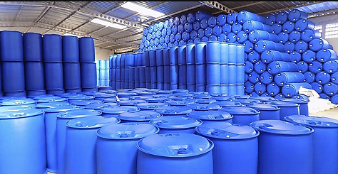
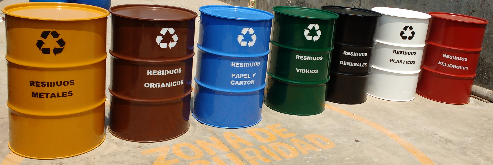
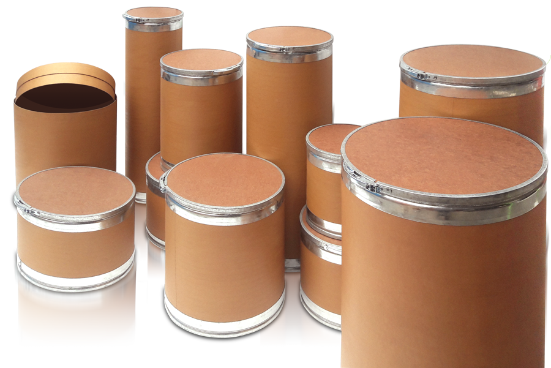
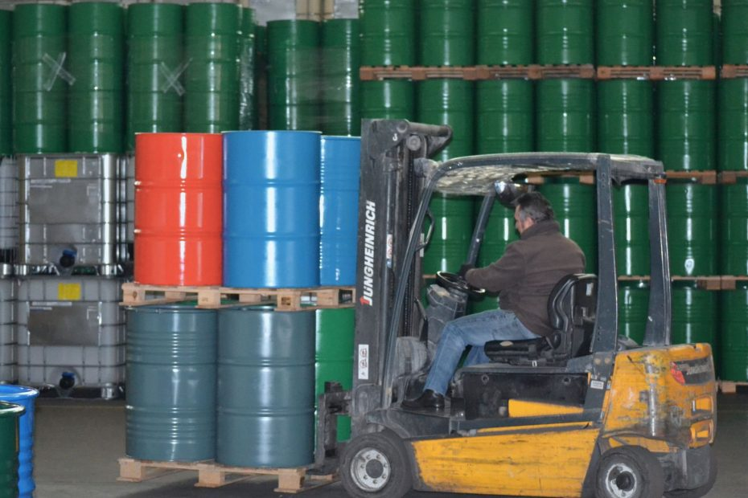

En EYM, nos especializamos en reacondicionar envases metálicos, plásticos y de cartón, asegurando que cumplan con los más altos estándares de calidad y seguridad. Nuestro proceso incluye la inspección, reparación y restauración de los envases, prolongando su vida útil. Con nuestros servicios de reacondicionamiento, no solo ahorras costos, sino que también contribuyes a un futuro más ecológico al optar por productos sostenibles.
Ofrecemos un servicio de lavado exhaustivo que elimina cualquier residuo y contaminación de los envases. Utilizamos técnicas y productos de limpieza seguros y eficaces, garantizando que cada envase esté completamente limpio y listo para su uso. Este proceso no solo asegura la calidad del contenido almacenado, sino que también protege la salud y seguridad de tus productos.
Ofrecemos un servicio de pintado de alta calidad que no solo mejora la apariencia estética de los envases, sino que también proporciona una capa adicional de protección contra agentes externos. Utilizamos pinturas ecológicas y duraderas que aseguran una larga vida útil del envase y una presentación profesional que refleja la calidad de tu producto.
Garantizamos un servicio de distribución eficiente y puntual, llevando tus envases directamente a tu puerta. Nuestra logística está diseñada para asegurar que cada entrega se realice de manera rápida y segura, minimizando el tiempo de espera y optimizando tus operaciones. Con nuestro servicio de distribución, puedes confiar en que tus envases llegarán a su destino en perfectas condiciones y a tiempo.
